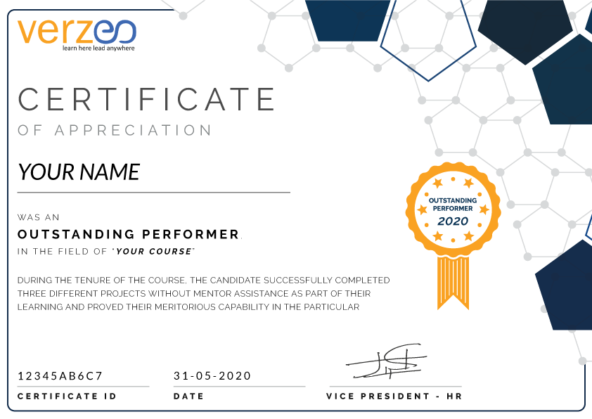
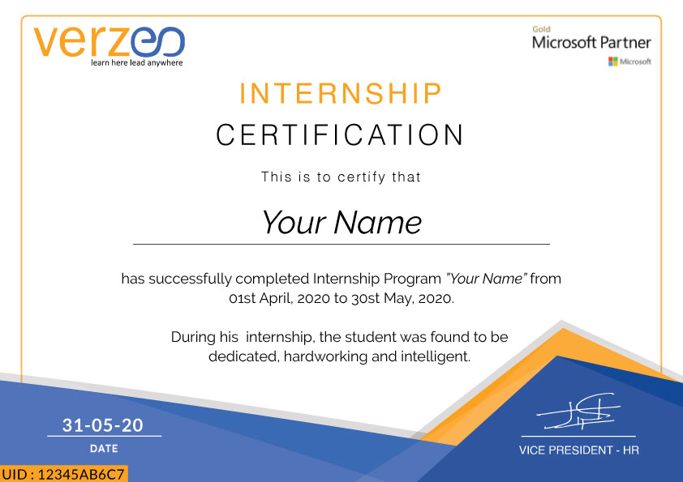
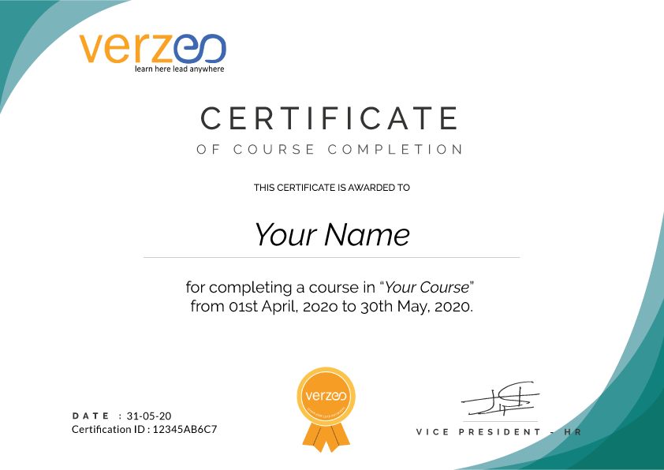

This is ISCED level 1.[16] Primary (or elementary) education consists of the first four to seven years of formal, structured education. They are typically designed to provide young children with functional literacy and numeracy skills and to is guaranteed, solid foundation for most areas of knowledge and personal and social development to support the transition to secondary school.[20] In general, primary education consists of six to eight years of schooling starting at the age of five to seven, although this varies between, and sometimes within, countries. Globally, in 2008, around 89% of children aged six to twelve were enrolled in primary education, and this proportion was rising.[21] Under the Education For All programs driven by UNESCO, most countries have committed to achieving universal enrollment in primary education by 2015, and in many countries, it is compulsory. The division between primary and secondary education is somewhat arbitrary, but it generally occurs at about eleven or twelve years of age. Some education systems have separate middle schools, with the transition to the final stage of secondary education taking place at around the age of fifteen. Schools that provide primary education, are mostly referred to as primary schools or elementary schools. Primary schools are often subdivided into infant schools and junior school.
In India, for example, compulsory education spans over twelve years, with eight years of elementary education, five years of primary schooling and three years of upper primary schooling. Various states in the republic of India provide 12 years of compulsory school education based on a national curriculum framework designed by the National Council of Educational Research and Training.